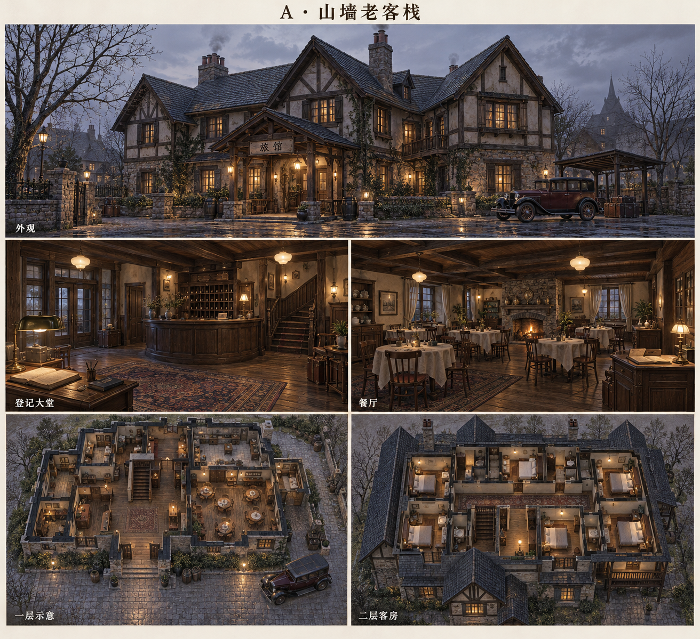
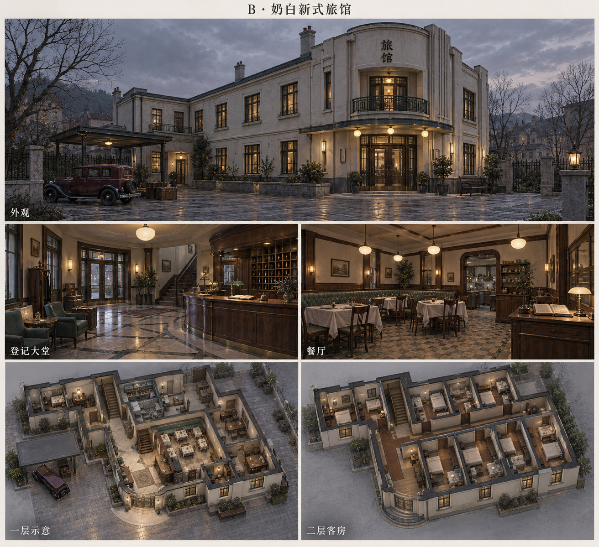
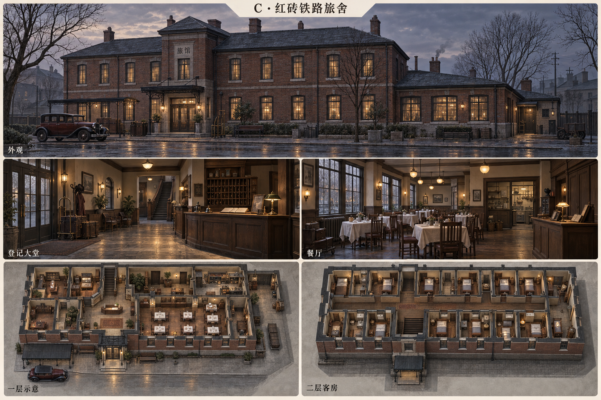
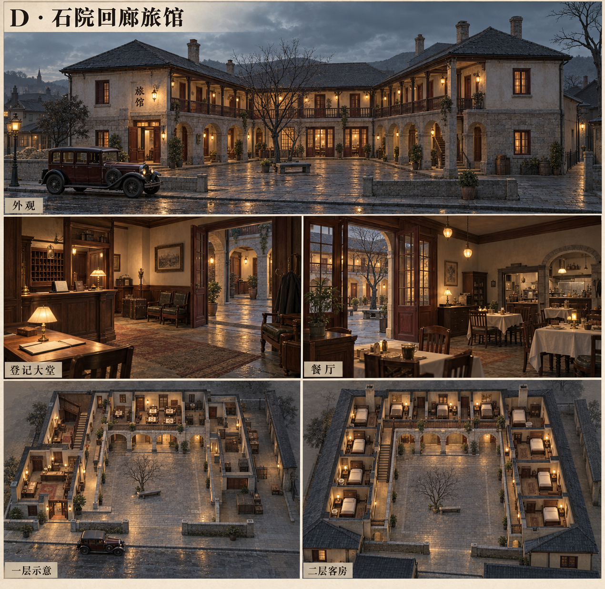
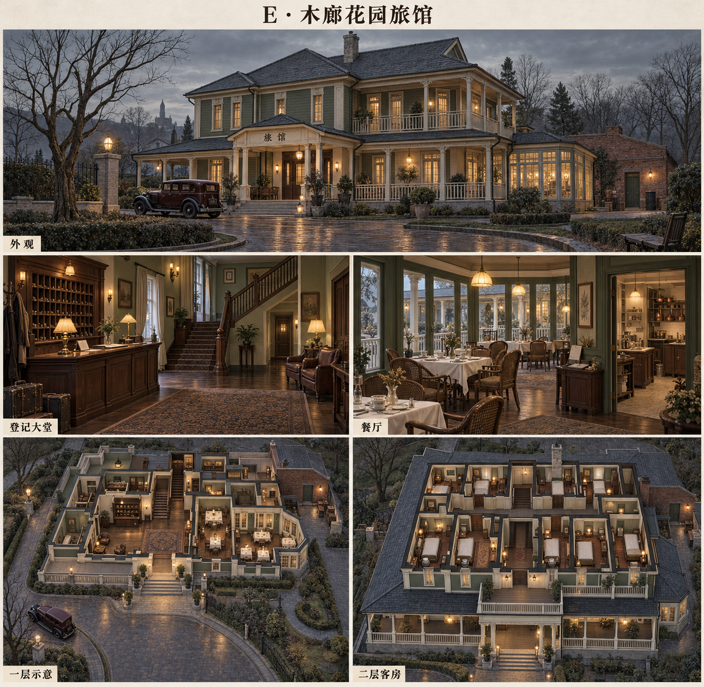

《错日证词》· 旅馆五案
1931 · 登记大堂、餐厅、客房与接送车院。每案包含外观、室内及两层空间示意。
A · 山墙老客栈 — 木构、山墙与低梁暖灯
B · 奶白新式旅馆 — 几何体块与圆角入口
C · 红砖铁路旅舍 — 横向砖楼、铁雨棚与旅客行李
D · 石院回廊旅馆 — 露天院与两层回廊
E · 木廊花园旅馆 — 檐廊、花园与别墅客房
概念图 · 多视图在后续建模时需以统一布局核对。登记簿及餐厅账本的精确内容按剧本制作。